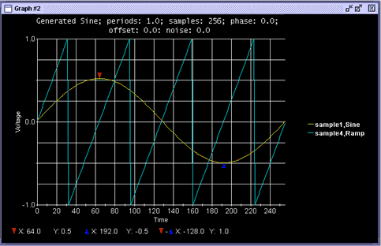

Overlay Waveforms
This function allows waveforms to overlay each other in a Data Display Panel of the Waveform Graphs Tool (WGT). Selecting a waveform from the Result Waveforms table of the Waveform Navigator Tool (WNT) places the waveform in a new selected (active) graph table in the WNT. The waveform is displayed in the selected Data Display Panel of the WGT, and any previous waveforms will not be cleared.
The selected waveform is highlighted in blue in the Results Waveform table of the WNT. In this state, clicking the right mouse button accesses the shortcut menu shown below (refer also to Result Waveforms Shortcut Menus).

Select Upload (Overlay) to overlay waveforms. The following shows a graph with waveforms that overlay each other. Each waveform is a different color.

The Actions item of the Menu Bar, the overlay function in the toolbar, or the shortcut menu in the Result Waveforms table can be used to overlay waveforms. In addition, theData Display API can be used to dynamically overlay waveforms into the WGT from external tools such as Test Methods.